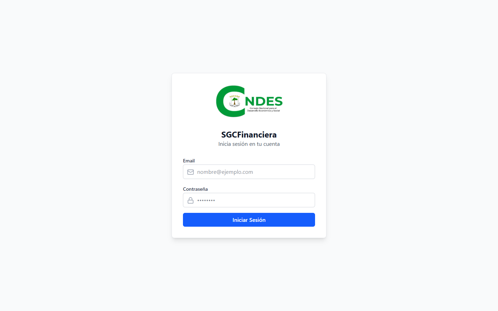

SGCFinanciera - Manual de Usuario Detallado
Versión: 2.2 | Fecha: 2026
Este manual describe el funcionamiento completo del sistema, detallando cada formulario, campo y flujo de trabajo. Incluye todas las capturas de pantalla disponibles.
1. Acceso al Sistema
El portal de entrada seguro para todos los usuarios autorizados.

Figura 1: Pantalla de Inicio de Sesión
- Usuario: admin@example.com
- Contraseña: admin123
2. Panel de Control (Dashboard)
Resumen ejecutivo del estado financiero y operativo de la organización.

Figura 2: Dashboard con KPIs avanzados y seguimiento mensual
Indicadores Clave (KPIs)
En la parte superior, encontrará tarjetas con información vital:
- Total Tesorería: Suma de saldos disponibles en todas las cuentas bancarias (Caja y Bancos).
- Ejecución Presupuestal: Porcentaje del presupuesto anual que ya ha sido consumido (pagado).
- Facturas Pendientes (Rojo): Número y monto total de facturas recibidas de proveedores que aún no han sido pagadas. Requieren atención inmediata.
- Órdenes de Compra (Morado): Número de pedidos emitidos o en proceso de recepción.
Sección de Compras y Facturación
Un resumen rápido del ciclo de gastos:
- Total Facturas: Documentos registrados en el sistema.
- Facturas Pagadas (Verde): Documentos finalizados.
- Facturas Sin Pagar (Rojo): Alerta visual de obligaciones pendientes.
Gráficos de Análisis
- Ejecución Mensual (Barras): Muestra el gasto total mes a mes, permitiendo identificar picos estacionales de gasto (Ej: Enero/Febrero).
- Distribución Anual (Donut): Visualiza la proporción entre Presupuesto Comprometido (POs emitidas), Ejecutado (Pagado) y Disponible.
3. Módulo de Tesorería
Gestión centralizada de cuentas bancarias y flujo de caja.

Figura 3: Panel de Control de Tesorería
3.1. Estado de Cuentas
Cada tarjeta representa una cuenta bancaria real. El sistema muestra:
- Saldo Disponible: Dinero real listo para usar. Se actualiza automáticamente con cada pago o ingreso.
- Estado: El indicador "Activa" confirma que la cuenta está habilitada para operaciones.
- Banco y Número: Identificación rápida (últimos 4 dígitos) para evitar errores en las transacciones.
3.2. Historial de Movimientos
Debajo de las tarjetas, encontrará la tabla de "Movimientos Históricos". Aquí queda registrada cada transacción (ingresos y egresos), vinculada siempre a un documento soporte (Factura, Recibo de Caja).
4. Módulo de Presupuesto
Control de ejecución presupuestal en tiempo real.

Figura 4: Tablero de Control Presupuestal
Indicadores de Ejecución
Los paneles superiores ofrecen una visión macro del año fiscal:
- Asignado (Azul): Presupuesto total aprobado para el año ($1.000.000.000).
- Ejecutado (Verde): Dinero que ya ha salido de caja (Pagado).
- Comprometido (Amarillo): Dinero reservado por Órdenes de Compra emitidas pero aún no facturadas/pagadas. Es vital para no sobregire el presupuesto real.
- Disponible (Morado): El saldo real libre para nuevos gastos.
Desglose por Rubros
La tabla inferior detalla cada cuenta (Ej: BP-001 Nómina, BP-002 Gastos Generales), permitiendo ver qué áreas están consumiendo más recursos de lo planeado.
5. Gestión de Gastos y Aprobaciones
El sistema permite un control detallado de cada solicitud de compra antes de que se convierta en un compromiso financiero.

Figura 5: Evaluación y Aprobación de Solicitudes
5.1. Proceso de Evaluación
Al expandir una solicitud (como la #26 en la imagen), el aprobador puede ver:
- Ítems Detallados: Qué se está pidiendo exactamente (Ej: "Sillas", 11 unidades).
- Comparativa de Cotizaciones: El sistema permite cargar múltiples ofertas.
- El usuario selecciona al proveedor ganador (marcado en verde, ej: "Servicios Tecnológicos Ltd.").
- Se visualiza el ahorro o sobrecosto respecto al presupuesto estimado.
5.2. Documento de Aprobación
Una vez aprobado, se genera un soporte digital inmutable. El botón "Ver Soporte de Aprobación" permite descargar este documento para auditoría.
6. Compras y Adquisiciones (Procurement)
Transformación de solicitudes aprobadas en pedidos formales a proveedores.

Figura 6: Control de Órdenes de Compra (PO)
Gestión de Órdenes (PO)
- Emitidas (Azul): La orden ha sido creada y enviada al proveedor, pero los bienes aún no llegan.
- Recibidas (Verde): Los bienes han llegado y se ha registrado la recepción (entrada a almacén).
- Acción "Recibir": Botón negro disponible en órdenes emitidas para marcar que la mercancía ha llegado.
7. Facturación y Pagos
Gestión del ciclo de pago a proveedores.

Figura 7.1: Gestión de Cuentas por Pagar
7.1. Registro de Pagos
El momento crítico de salida de dinero se controla mediante un asistente seguro.

Figura 7.2: Asistente de Tesorería para Pagos
Al hacer clic en "Registrar Pago", una ventana emergente (modal) guía al usuario:
- Confirmación de Factura: Muestra el proveedor y monto a pagar.
- Selección de Origen de Fondos: El usuario elige la cuenta bancaria.
- Seguridad: El sistema muestra en tiempo real el Saldo Disponible (en verde) y calcula el Saldo Después del Pago. Si no hay fondos, no permite continuar.
- Referencia: Campo obligatorio para el número de cheque o código de transferencia electrónica.
8. Activos Fijos
Control centralizado del inventario valorizado de la organización.

Figura 8: Inventario de Equipos, Muebles y Enseres
Gestión de Activos
La tabla muestra todos los elementos propiedad de la empresa, detallando:
- Código y Nombre: Identificación única y descripción (Ej: "Laptop HP", "Silla Gerencial").
- Ubicación: Dónde se encuentra físicamente el activo (Ej: Bodega Central, Oficina Principal).
- Valor Unitario: Costo de adquisición histórico.
- Estado (Badge): Indica si está en Bodega, Asignado, o en Mantenimiento.
- Acción "Mover": Permite cambiar la ubicación o responsable del activo.
9. Contabilidad
El módulo contable es el repositorio central de toda la información financiera. Se divide en cuatro pestañas principales para facilitar la auditoría.
9.1. Libro Diario
Registro cronológico de todos los asientos generados automáticamente por el sistema (al emitir facturas, recibir pagos, etc.).

Figura 9.1: Vista detallada de Asientos Contables
Al expandir un asiento (como el #36 en la imagen), se puede ver el detalle de Débitos y Créditos, garantizando que cada operación esté balanceada.
9.2. Libro Mayor (Terceros)
Permite analizar los saldos por proveedor o entidad. Es fundamental para conciliaciones.

Figura 9.2: Saldos por Tercero
Muestra cuánto se ha movido (Débitos/Créditos) con cada tercero y su saldo final.
9.3. Balance de Comprobación
Resumen de saldos de todas las cuentas del PUC (Plan Único de Cuentas).

Figura 9.3: Balance de Prueba
Verifica la integridad de la contabilidad asegurando que la suma total de débitos iguale a los créditos (Saldo cero al final).
9.4. Estado Presupuestario
Reporte cruzado que compara la ejecución contable contra el presupuesto.

Figura 9.4: Ejecución Presupuestal Detallada
- Comprometido: Valor de contratos/pedidos firmados.
- Devengado: Valor de facturas recibidas y aceptadas (obligación real).
- % Ejecución: Métrica clave de avance financiero por rubro.
- Botón Exportar: Permite descargar este informe oficial para presentaciones.
10. Reportes y Analítica
Centro de inteligencia de negocios para la toma de decisiones basada en datos.
Figura 10: Tablero de Análisis General
Categorías de Análisis
- Financieros: Balances, Estado de Resultados, Flujo de Caja.
- Presupuestales: Ejecución por rubro, seguimiento de compromisos.
- Operativos: Gastos por departamento, eficiencia de proveedores.
- Activos: Depreciación y estado del inventario.
Todos los reportes permiten filtrar por rango de fechas y exportar a Excel/PDF para compartir.
11. Configuración y Maestros
Administración de los catálogos base que permiten el funcionamiento del sistema.
11.1. Plan de Cuentas (PUC)

Figura 11.1: Estructura Contable
Administre la jerarquía contable (Clase, Grupo, Cuenta, Subcuenta). Es la columna vertebral para la automatización de asientos.
11.2. Administración de Terceros

Figura 11.2: Directorio de Proveedores y Empleados
Base de datos centralizada de personas y empresas. Es vital registrar correctamente el RUT/NIT para el reporte de impuestos.
11.3. Entidades Bancarias

Figura 11.3: Catálogo de Bancos
Configuración de los bancos donde la empresa tiene cuentas. Se usa para validar códigos SWIFT/IBAN en transferencias.
11.4. Rubros Presupuestales

Figura 11.4: Configuración de Partidas
Definición de las bolsas de dinero (Ej: "Gastos de Viaje", "Infraestructura") y asignación del presupuesto inicial para el año fiscal.
11.5. Usuarios y Roles

Figura 11.5: Seguridad y Acceso
Administración de credenciales de acceso. Puede crear usuarios con roles específicos (ADMIN, CONTADOR, USUARIO) para restringir el acceso a módulos sensibles.